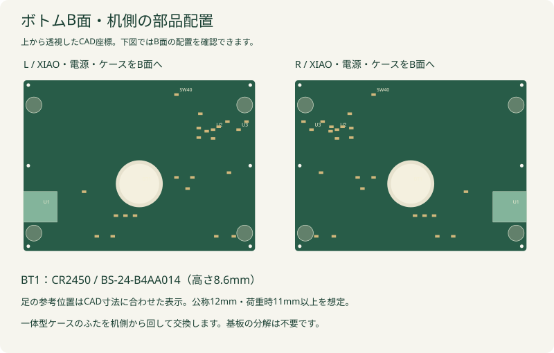

YOUR KEYBOARD, LAYER BY LAYER
重ねて、つなぐ。
無線キーボードの
全体像。
キーはメインへ。電池とマイコンはボトムへ。
いまの設計を、完成形から組み立てまで見渡すガイドです。
設計スナップショット：2026.11.15 · 公開用ガイド
外装・キーキャップの色と形は説明用。外装ケース、スタビライザーの適合、ファームウェアは未確定です。
配置・配線は実際のKiCadデータから表示。 分解図は仕組みを伝える模式図です。基板の間隔は15mmを基準とし、無線通信・電源の実動作と現物の嵌合は、今後確認する段階です。
01 / THE STACK
3枚でできる、ひとつの構造。
層を選ぶと、その役割と実装する面がわかります。
キーキャップは3枚の構造に加わる外装部品です。
表示の開き具合は説明用です。実際のメイン下面〜ボトム上面は15mm。
MOUNTING / SAME SIX CENTRES
メインには、スペーサーを通す。
トップ・ボトムはφ2.2mmのM2ねじ穴。
メインは外径4mmを通すφ4.4mm穴です。

穴中心は6か所すべて維持。ねじ山はスペーサー側にあり、FR4へ直接ねじを切る構成ではありません。15mmはメイン〜ボトムの面間隔です。スペーサー全長・ねじ長はプレート厚とスイッチ高さを決めて選定します。
BATTERY SERVICE / INTEGRATED LID
ふた付きの部品で、裏から交換。
CR2450用 MYOUNG BS-24-B4AA014。
基板を外さず、ケースのふたを回します。

部品：ふた付き一体型のSMT電池ケース、JLCPCB番号 C7525448。別体カバー・H7/H8の穴・カバー用ねじは不要です。
高さ：本体φ29.5mm、高さ8.6mm。検査では9mmの包絡とし、足は公称12mm程度・荷重時11mm以上を仮定します。
交換：電源OFF・USBを外す → 裏返す → ふたをOPEN方向に回す → CR2450を極性どおりに交換 → ふたを閉じる。実物の嵌合と足の圧縮は未確認です。
実際の部品とフットプリントの根拠を見る

写真出典：LCSC / MYOUNG製品ページ。メーカー推奨PCBランドは3.4×3.6mm、中心間31.1mm。寸法図 MY-CP-0246 A/0 からKiCadフットプリントを作成しました。3D表示は外形確認用の簡略モデルです。発注時に在庫とふたの同梱・実装後の扱いを確認します。
02 / READ THE PCB
部品の位置から、設計を読む。
部品やキーを選択すると、その役割を表示。
細い線まで、現在のPCBから読み出しています。
上から透視した座標です。電源表示では実際の配線を部品の上に透視表示します。
図は musen/main と musen/bottom の実配置・パッド・配線から生成。B面の線も上からの透視で表示し、左右を反転していません。
03 / MAKE THE CONNECTION
2本のコネクタで、上下をつなぐ。
J50同士、J51同士を、同じ番号で対応させます。
電池・USBの電源回路はボトム側で完結します。
PIN SELECTOR — 番号を選択
MAIN / 下向きのメス側
SSW-112-01-G-S
高さ8.51mm。メインB面に実装します。
BOTTOM / 上向きのオス側
MTSW-112-08-G-S-320
ボディ2.54mm、ポスト8.128mm。ボトムF面に実装します。
FIT / 指定長さが必要
短い汎用ヘッダーに注意
15mmの間隔では短いピンは届きません。指定品の挿入量は4.178mm、メーカー範囲は3.68〜6.35mmです。
全24端子の対応表を見る
| 番号 | J50 メイン → ボトム | J51 メイン → ボトム |
|---|
04 / ASSEMBLY SEQUENCE
下から準備して、平行に重ねる。
部品実装と、層を重ねる順序を分けた工程案です。
上面プレートの最終設計・現物合わせは別途必要です。
電池交換 机側から一体型ケースのふたをOPEN方向に回します。メイン・ボトム・トップは分解しません。
下面の高さ ケースは公称8.6mm。ゴム足は荷重時11mm以上、公称12mm程度を見込みます。
外装の残作業 部品の実物嵌合と足の圧縮、USB開口、2Uスタビライザーの型番とトップ開口への適合は未確認です。
05 / SIGNAL & POWER
キーの信号と、電源の通り道。
入力はメインから、無線はボトムから。
左右はそれぞれ電池で動かす構想です。左右間のTRRSケーブルは使わず、左右の無線入力をUSBドングルへ集めます。BLE・ドングルのファームウェアと実通信は未検証。
一次電池の電源は、ボトム内で完結。
USB接続時はVBUSでLM66100を無効化する設計。電池側のダイオードと合わせて逆流を抑える構成ですが、起動・USB切替・逆流量・電池寿命の実測は残っています。CR2450は充電する構成ではありません。
06 / VERIFIED & STILL TO DO
確かめたこと。これから確かめること。
左右メイン＋左右ボトムの回路図・PCBを照合し、さらに左右トップを検査。ERC・DRC・未配線・回路図との不一致は0件。元プロジェクトから継承した無効チェックは、検証レポートに記録されています。
確認済み：理想キー走査、上下端子の対応、元のキー位置・外形・固定穴、寸法上の部品クリアランス。未確認：BLE実通信、電源の過渡応答、一次電池への逆流の実測、電池寿命、現物の嵌合とチャタリング。
設計条件と参考資料
スペーサーと固定穴の断面図 ↗ 電池ケース・足の配置図 ↗ 検証結果の概要 ↗ 電池ケースの部品情報 ↗ ガイドのGitHubリポジトリ ↗
このページは設計スナップショットの解説資料です。部品の適合・スペーサー全長・実動作には確認が残っています。